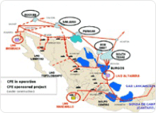
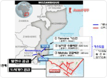
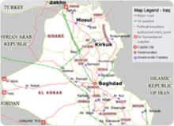
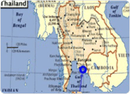
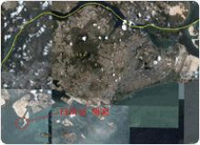
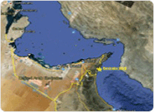
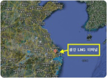
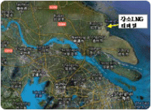

해외기술사업 및 투자
-

멕시코 만사니요 LNG터미널 사업
- 사업개요 : 멕시코 중서부지역에 발전용 및 산업용 천연가스 공급을 위한
LNG터미널 건설 및 운영사업
- 위치 : 멕시코 서부 태평양 연안의 콜리마주 만사니요(Manzanillo)
- 발주자 : 멕시코 전력청 (CFE)
- 사업방식 : Build-Own-Operate (BOO)
- 공동사업자 : KOGAS(25%), 삼성물산(37.5%), Mitsui(37.5%)
- 설비규모 : 150,000㎘저장탱크×2기, 기화송출설비(연 380만톤 처리)
- 사업기간 : 2008년 4월 ~ 2031년 8월(건설 : 2008.4 ~ 2011.8,
운영 : 2012.6 ~ 2031.8)
- KOGAS : 역무 : 투자, 건설관리, 터미널 운영
-

모잠비크 마푸토 도시가스 사업
- 사업개요 : 모잠비크 수도 마푸토 도시가스 배관망을 건설하고 발전소,
대량수요처 등에 도시가스 판매
- 위치 : 모잠비크 수도 마푸토
- 사업방식 : BOO(Build-Own Operate)
- 발 주 자 : ENH-KOGAS, SA(JV)
- 도급형태 : EPC Turn-key(KOGAS 자회사 단독도급)
- 설비규모 : Steel배관(10“), Steel배관(6"~2"),PE배관 등 63.5㎞, 관리소 3개소
- 도급형태 : EPC Turn-key(KOGAS 단독도급)
- 사업기간 : 2012. 4. ~ 2034. 5 (건설:~ 2014.5, 운영:2014.6 ~ 2034.5)
-

이라크 Kirkuk~Baiji Pipeline EPC 사업
- 사업개요 : 이라크 공급인프라 증설 및 대규모 노후 배관 교체사업
- 위 치 : 이라크 북동쪽 Kirkuk ~ Baiji
- 발 주 자 : OPC(Oil Pipelines Company, 이라크 배관운영담당 국영기업)
- 도급형태 : EPC Turn-key(KOGAS 단독도급)
- 공사규모 : DRY GAS Line 18" × 110㎞, LPG Line 18" × 110㎞, 2열 병행시공,
60㎞ × 2열 제각공사 포함
- 계약기간 : 2012. 10. 23 ~ 2014. 12. 28
-

태국 PTT LNG터미널 사업
- 사업개요 : 태국 라용(Rayong)에 태국 최초의 LNG터미널을 건설하는 사업
- 발주자 : PTTLNG Company Limited
- 컨소시엄 : KOGAS, GS건설, 대우엔지니어링
- 설비규모 : 160,000㎘저장탱크×2기, 기화송출설비(연 500만톤 처리)
- 사업기간 : 2008년 2월 ~ 2012년 11월
- KOGAS 역무 : 기술자문, 교육훈련, 시운전
-

싱가폴 LNG터미널 사업
- 사업개요 : 싱가폴 주롱섬에 싱가폴 최초의 LNG터미널을 건설하는 사업
- 사업주 : Singapore LNG Pte. Ltd.
- 건설공사 계약자 : 삼성물산
- 설비규모 : 180,000㎘저장탱크×2기, 기화송출설비(연 350만톤 처리)
- 사업기간 : 2010년 3월 ~ 2013년 8월
- KOGAS 역무 : 기술자문, 교육훈련, 시운전
-

아랍에미리트 LNG 터미널 기술자문사업
- 사업개요 : 아랍에미리트 후자이라 지역에 위치한 LNG터미널 기술자문사업
- 사업주 : Emirates LNG LLC
- 설비규모
- 1단계: FSRU (연 450만톤 처리)
- 2단계: FSU + 육상기화설비 (연 450만톤 처리)
- 사업기간 : 2012년 1월 ~ 2015년 7월
- KOGAS 역무 : 기술자문, 기술도서 검토, 기술 감사 및 현장감리
-

중국 절강 LNG터미널 기술자문사업
- 사업개요 : 중국 절강성에 위치한 LNG터미널 기술자문사업
- 사업주 : CNOOC-Zhejiang LNG Co., Ltd.
- 설비규모 : 160,000㎘ x 3기, 기화송출설비 (연 300만톤 처리)
- 사업기간 : 2012년 6월 ~ 2012년 11월
- KOGAS 역무 : 기술자문
-

중국 강소 LNG터미널 저장탱크 설계 및 감리용역사업
- 사업개요 : 중국 강소성에 위치한 LNG터미널 저장탱크 설계 및 감리용역사업
- 사업주 : PetroChina LNG Jiangsu Co.
- 설비규모 : 160,000㎘ x 3기, 200,000㎘ x 1기, 기화송출설비(연 350만톤 처리)
- 사업기간 : 2012년 8월 ~ 2015년 12월
- KOGAS 역무 : 저장탱크 설계 및 감리용역